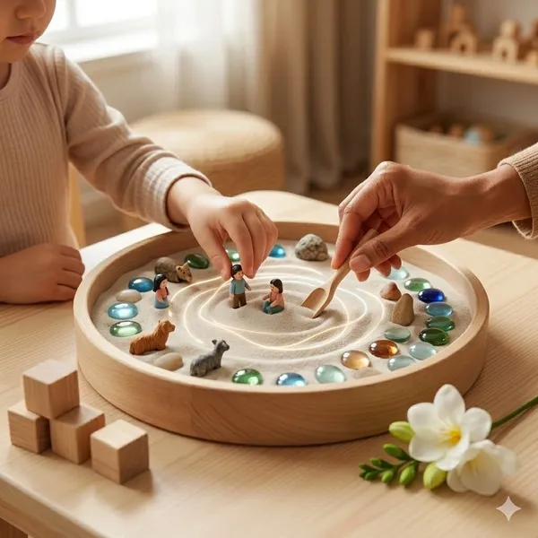

Terapi Yöntemleri
Terapi sürecinde danışanın ihtiyaçları, yaşadığı zorluklar ve terapi hedeflerine göre farklı psikoterapi yaklaşımları kullanılabilir.
Bilişsel Davranışçı Terapi (BDT)
Bilişsel Davranışçı Terapi, bireyin düşünce, duygu ve davranışları arasındaki ilişkiyi anlamaya odaklanan bilimsel temelli bir terapi yöntemidir.
EMDR Terapisi
EMDR Terapisi, özellikle travmatik yaşantıların işlenmesinde kullanılan etkili ve bilimsel bir psikoterapi yöntemidir.
Çözüm Odaklı Kısa Süreli Terapi
Çözüm Odaklı Kısa Süreli Terapi, bireyin sorunlarından çok güçlü yönlerine ve sahip olduğu kaynaklara odaklanır.
Psikodinamik Terapi
Psikodinamik Terapi, bireyin bilinçdışı süreçlerini, geçmiş yaşantılarını ve ilişkilerini anlamaya yönelik bir terapi yaklaşımıdır.

Kabul ve Kararlılık Terapisi (ACT)
Kabul ve Kararlılık Terapisi, bireyin zorlayıcı düşünce ve duygularla mücadele etmek yerine onları kabul ederek yaşamındaki değerler doğrultusunda hareket etmesini amaçlar.